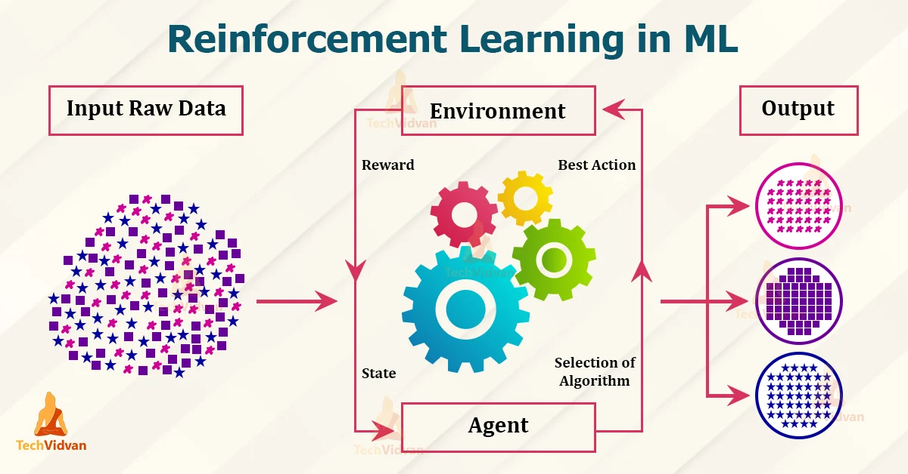

Home of Reinforced Learning
Reinforced Learning is the final type of machine learning that we will look at. Reinforced learning is a trial and error approach. That is to say that a program is trained on data and then put into action, if the algorithm does not complete the task it is trained to do, then it learns and tries a different approach. This is continued until the algorithm performs the task required in that environment.
In a reinforced learning algorithm the agent, which is the term used to describe the algorithm, rewards good behaviours and punishes negative behaviours. In simple terms, if the algorithm gets it right, then the program learns that and uses it again. If the program gets it wrong, then that behaviour is discarded.
Gaming provides a better example of this. Nowadays, we can program reinforced learning algorithms to complete games with ease. To start with, the algorithm moves at random around the environment, in this case, a game. The program will make mistakes and some positive moves. It is applying trial and error to find the optimum solution to the problem. As computers do not need to rest or take breaks, this process can continue until the algorithm can successful thrive in the environment it has been programmed to work in.
Here is an example of reinforced learning algorithm
This diagram shows how reinforced learning works. This image is from Tech Vidvan
So, over time, the agent looks for positive behaviours and not for negative bevaviours. It learns from the environment it is in which allows it to perform tasks. Over time, these can be very powerful at performing different tasks.
Watch this video for some better perspective on reinforced learning